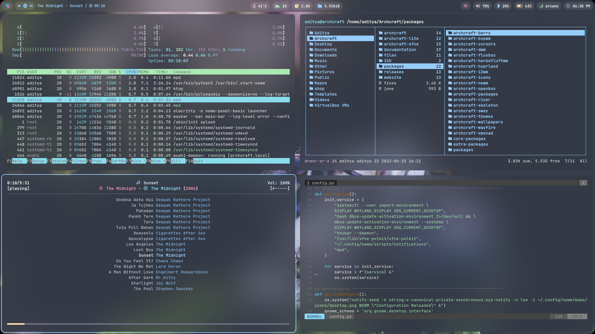
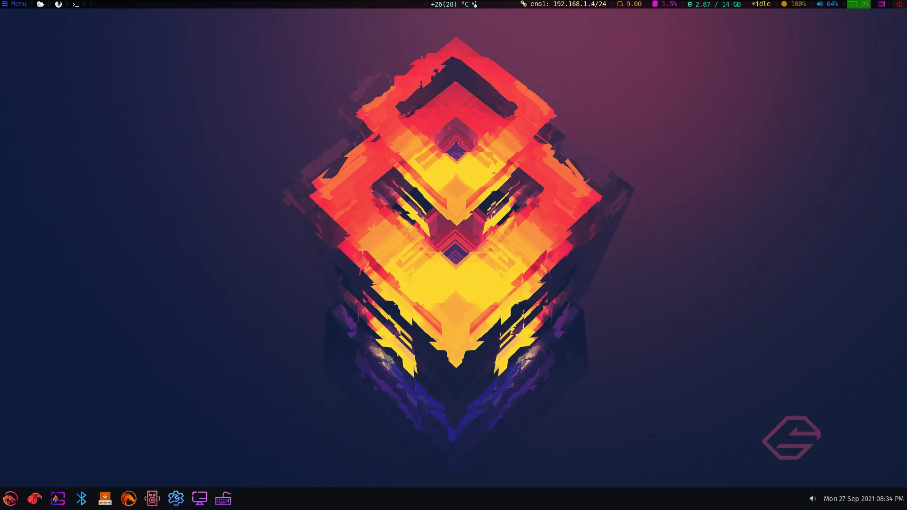
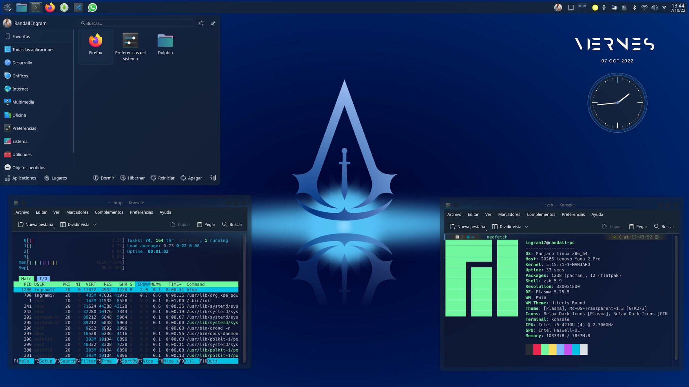
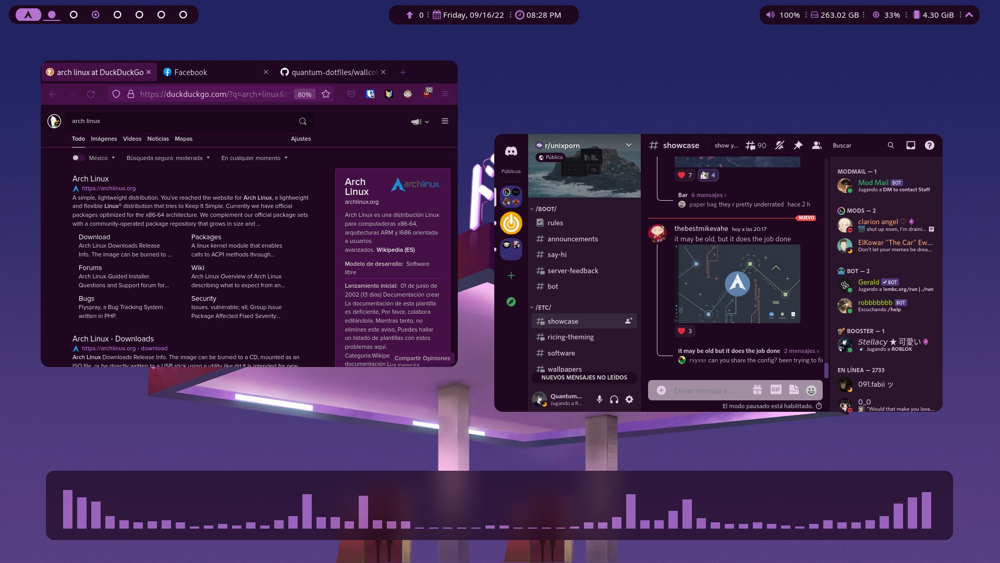
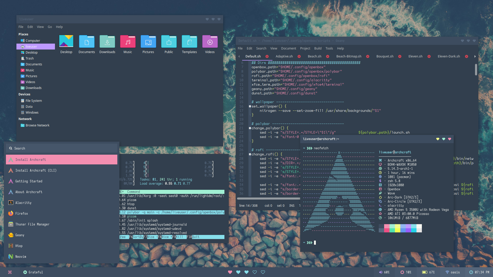
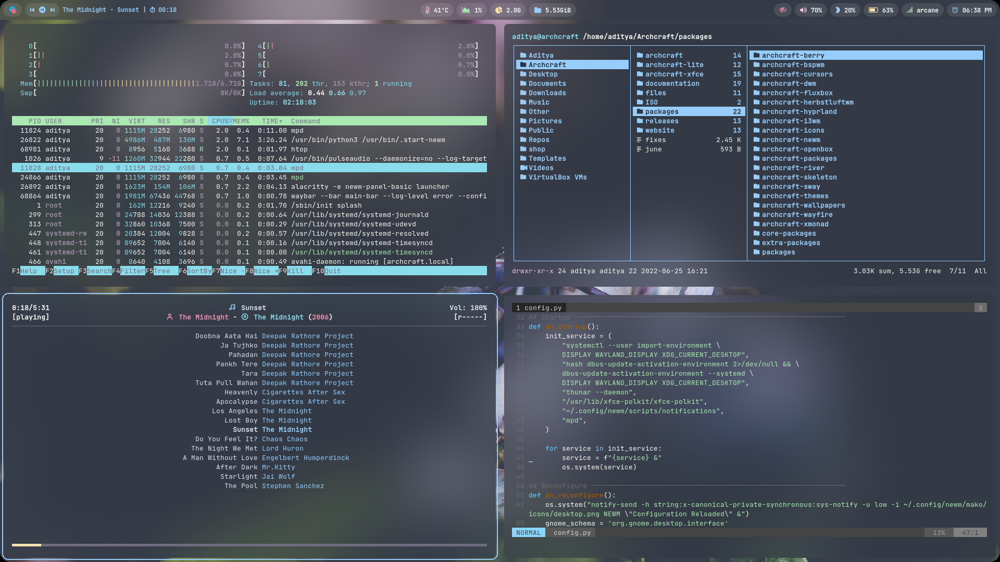
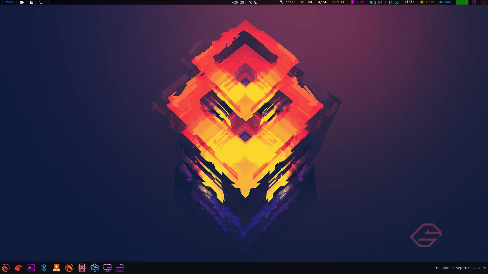
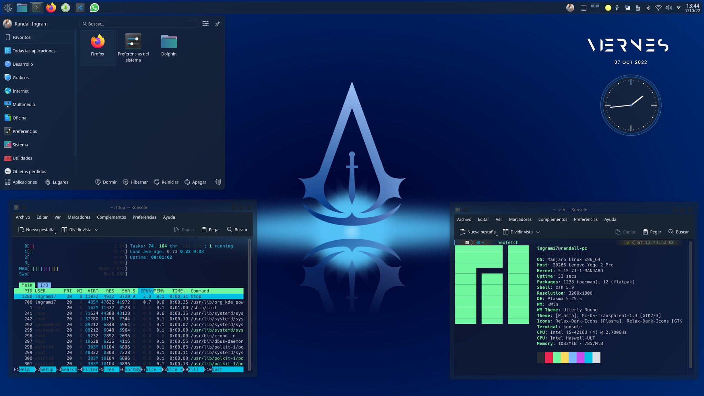
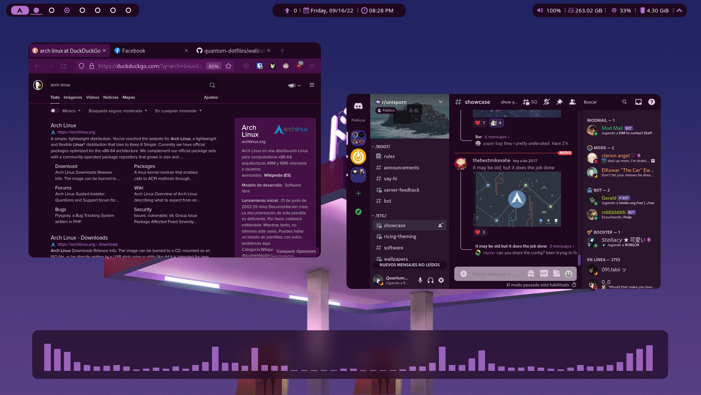
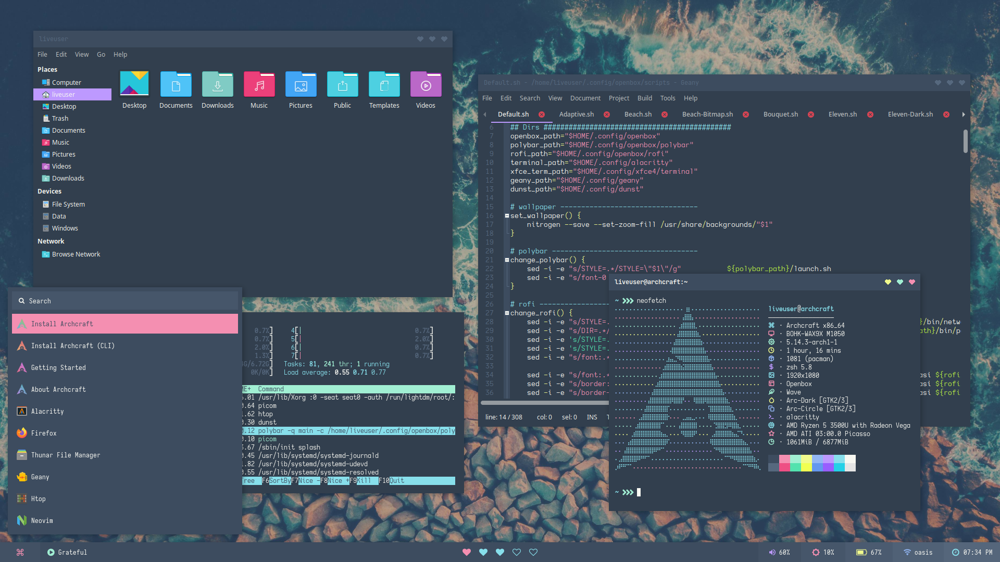

Pequeña Historia
Los primeros años
Judd Vinet, un guitarrista ocasional y programador canadiense, comenzó a desarrollar Arch Linux a principios de 2001. Su primer lanzamiento oficial, Arch Linux 0.1, fue el 11 de marzo de 2002.
Motivado por la elegante sencillez de Slackware, BSD, PLD Linux y CRUX, y también decepcionado ante la falta de gestión de paquetes en ese momento, Vinet construyó su propia distribución basada en principios similares a aquellas distribuciones.
Pero, también escribió un programa de gestión de paquetes llamado pacman para manejar, de forma automática, la instalación, eliminación y actualización de paquetes.
1Garuda linux
Garuda Linux es una distribución de Linux que proporciona a los usuarios un entorno informático basado en Arch Linux con los entornos de escritorio Kde Plasma, Xfce entre otros. El modelo de lanzamiento es de Liberación continua o rolling release. Su país de origen y sede actual es India.
2Manjaro
Manjaro Linux, o Manjaro, es una distribución GNU/Linux, con Xfce, KDE o GNOME Shell como interfaz de usuario por defecto. Se trata básicamente de un sistema operativo libre para computadores personales y enfocado en la facilidad de uso.
3Archcraft
Archcraft es otra distro Linux más, con un estilo minimalista y que está basada en Arch. pero no está orientada a principiantes, muy lejos de esto. Está orientada a usuarios avanzados, que busquen un sistema minimalista, que consuma pocos recursos, y que se pueda personalizar al máximo.
Galeria sobre Distribuciones basadas en Arch Linux
 








